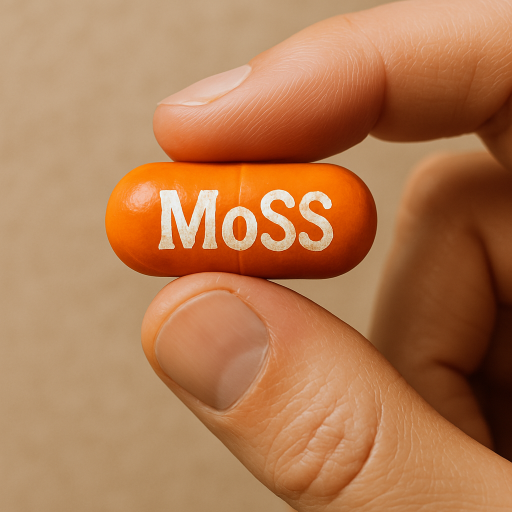

New ways to control properties that influence dissolution, stability and performance.
EPSRC Programme Grant · UKRI2227
Molecular Solid Solutions
Reshaping crystals today to transform the materials of tomorrow.
MoSS brings together chemistry, engineering, crystallisation, modelling, data science and AI to develop new rules for designing molecular crystals with controllable properties.

£7.2mEPSRC programme funding
5.5 yearsProgramme duration
3 universitiesDurham · Leeds · Manchester
1 ambitionMake smarter molecular materials by design
Why MoSS?
Small molecular changes. Big materials possibilities.
Molecular crystals are everywhere: in medicines, foods, agrochemicals and electronics. How molecules pack in a crystal can strongly influence how a product behaves.
MoSS is exploring how tiny amounts of additional molecules can be incorporated deliberately into molecular crystals to create solid solutions and tune their properties. Similar ideas transformed metals and silicon-based electronics; molecular crystals present a much more complex design challenge.
Our programme combines advanced crystallisation technologies, robotics, modelling, data and artificial intelligence to build the understanding needed to design these materials rather than discover them by trial and error.
Adapted from Durham University’s launch story about the MoSS programme. Read the Durham announcement →
Materials designed for more effective and sustainable future products.
Better understanding and control of crystalline properties that influence product behaviour.
Molecular materials with properties tuned for future technologies.
The scientific question
Solid solutions transformed metals and silicon-based electronics.
What becomes possible when we learn to design them deliberately in molecular crystals?
Explore the science
Our community
Better science happens together.
MoSS is a collaborative scientific community spanning institutions, disciplines and career stages.
We want the website to be a home for the science and for the people behind it: sharing publications, conversations, resources, news, outreach and opportunities to work with us.